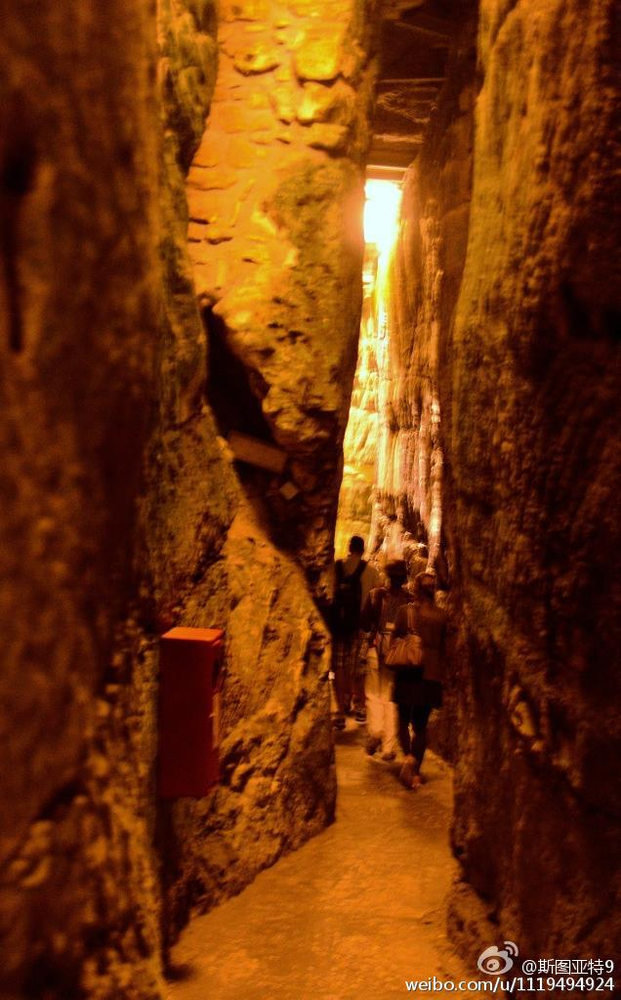
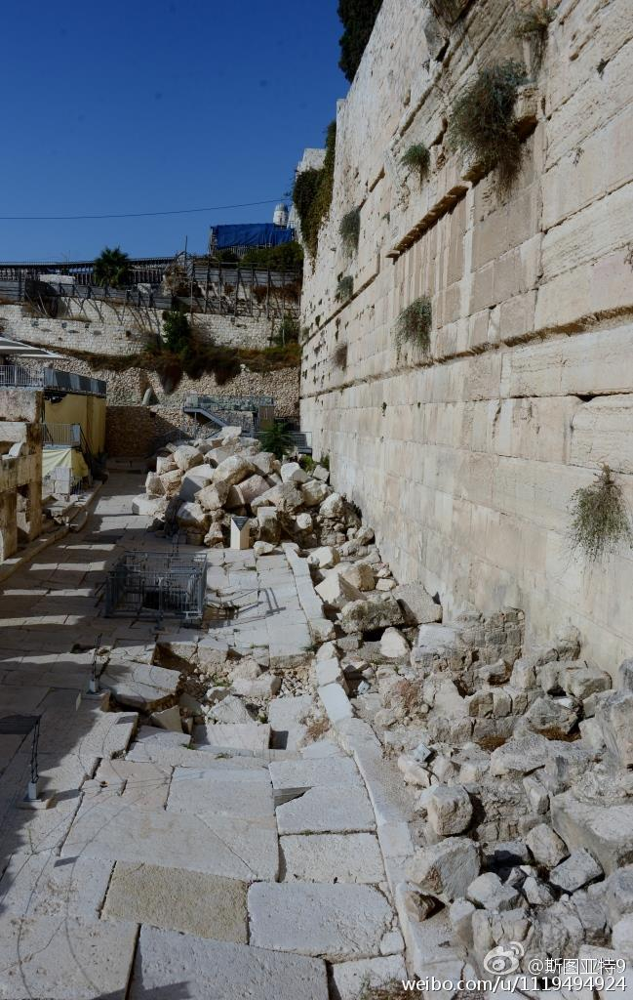
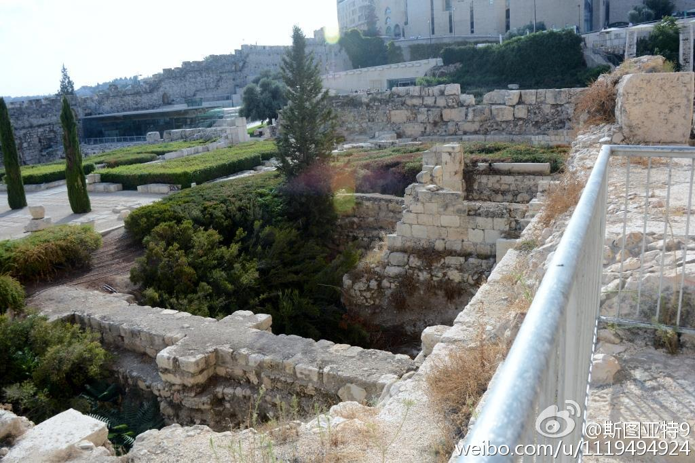
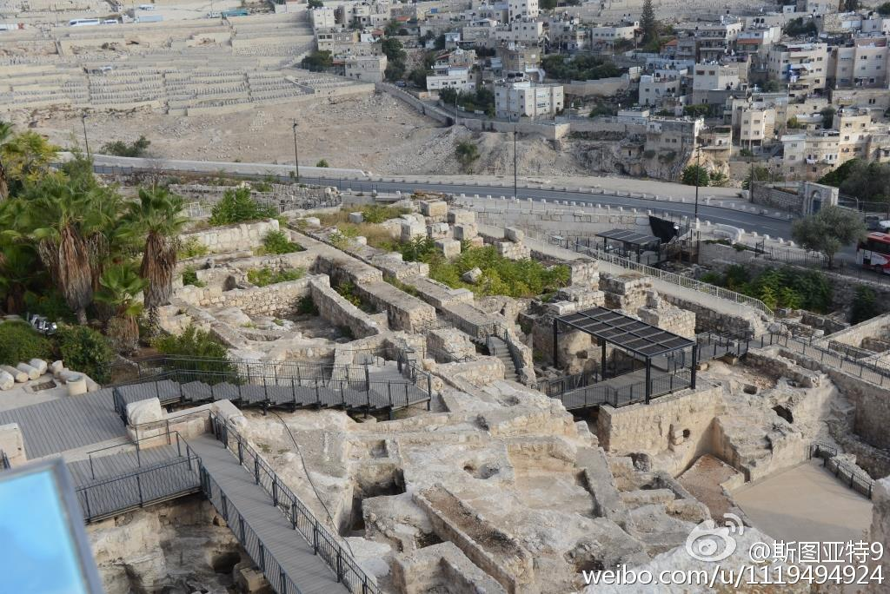
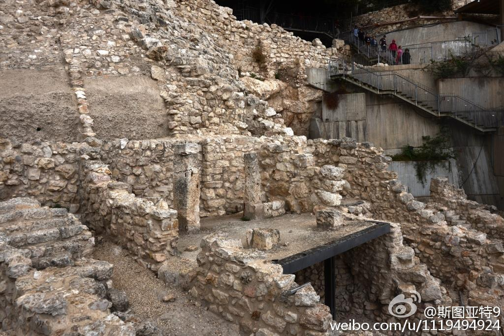
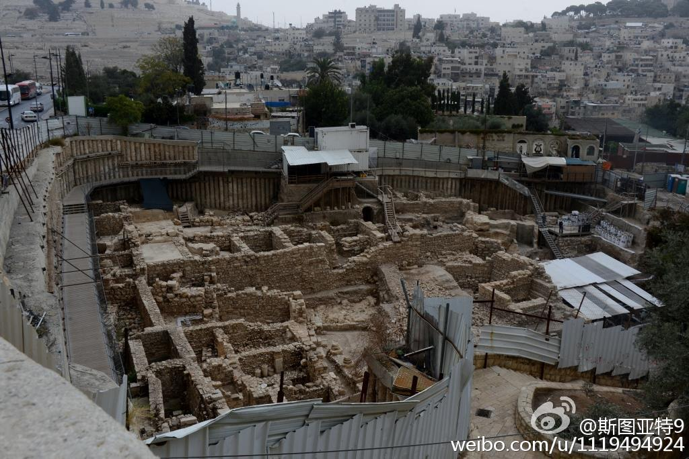
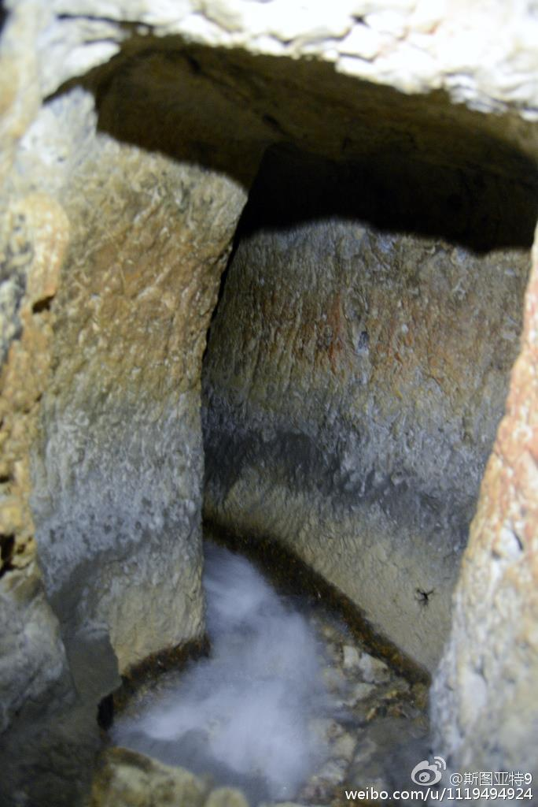
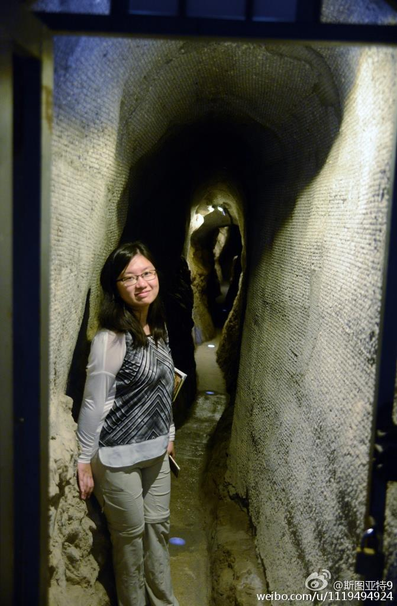
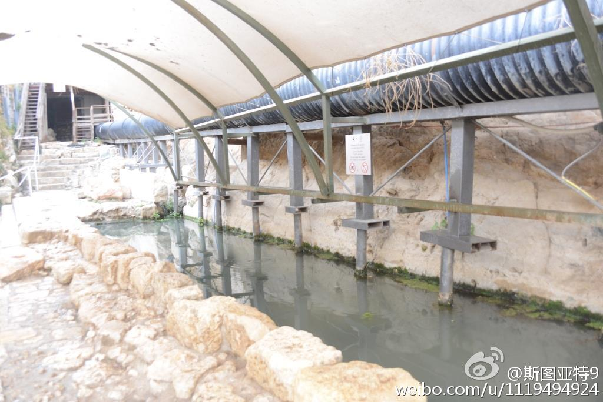

耶路撒冷的遗址景点——哭墙隧道（1）、考古园（2-4），大卫之城（其他）。这仨景点都是高度政治化的，从宣传上告诉游客耶路撒冷自古就是犹太人的地盘。大卫之城更受争议，因为在巴勒斯坦人的居住区上，为此还驱逐了很多巴人，见 网页链接 。从照片上能看出来，这仨景点其实也没啥意思。 

 网页链接 。从照片上能看出来，这仨景点其实也没啥意思。
网页链接 。从照片上能看出来，这仨景点其实也没啥意思。